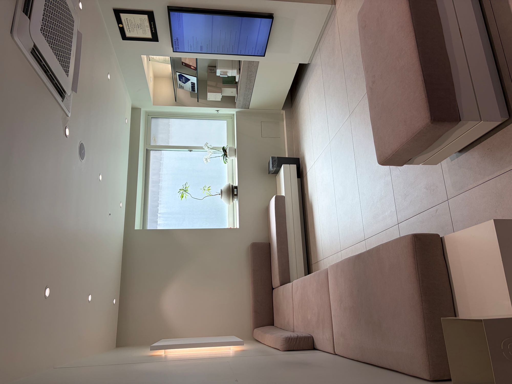
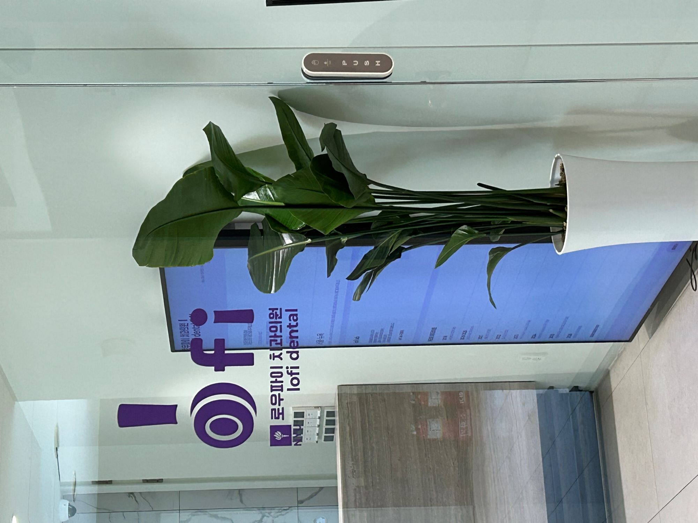
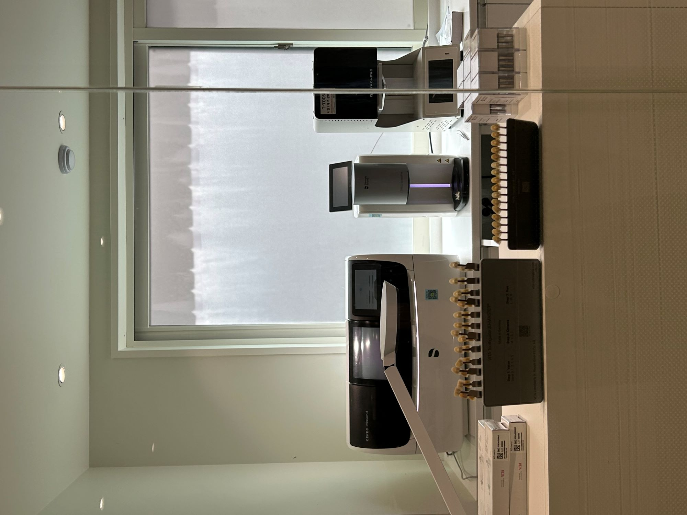
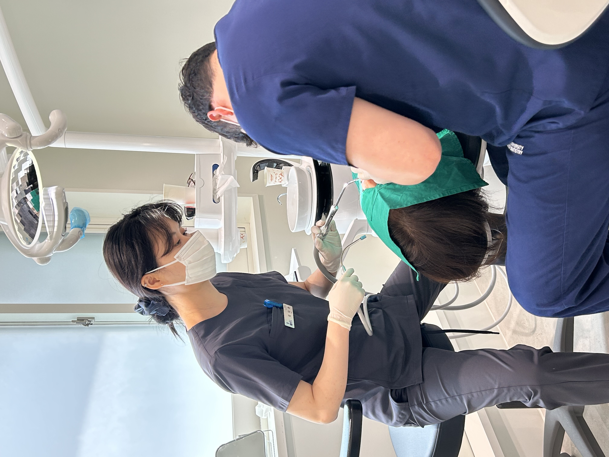
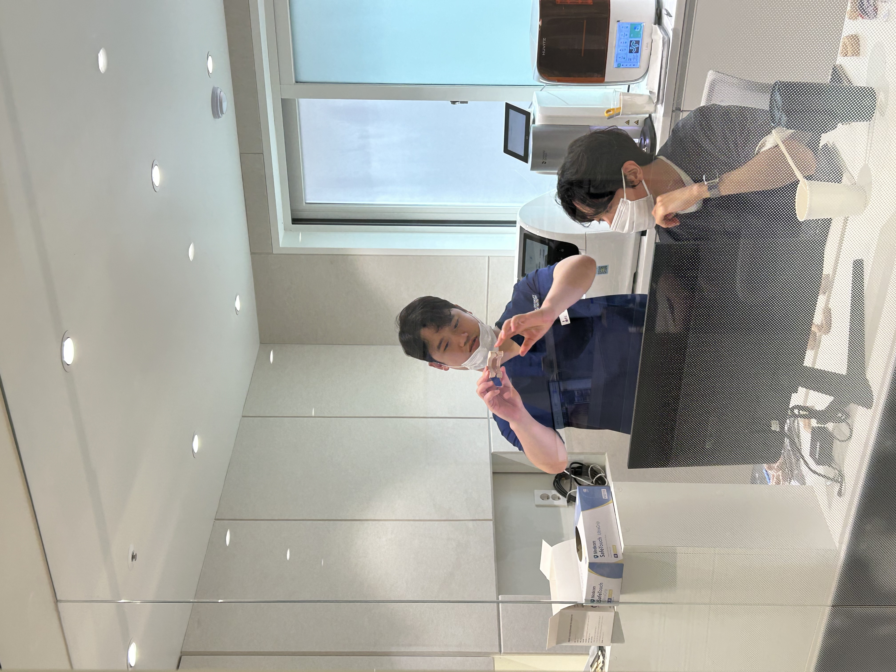
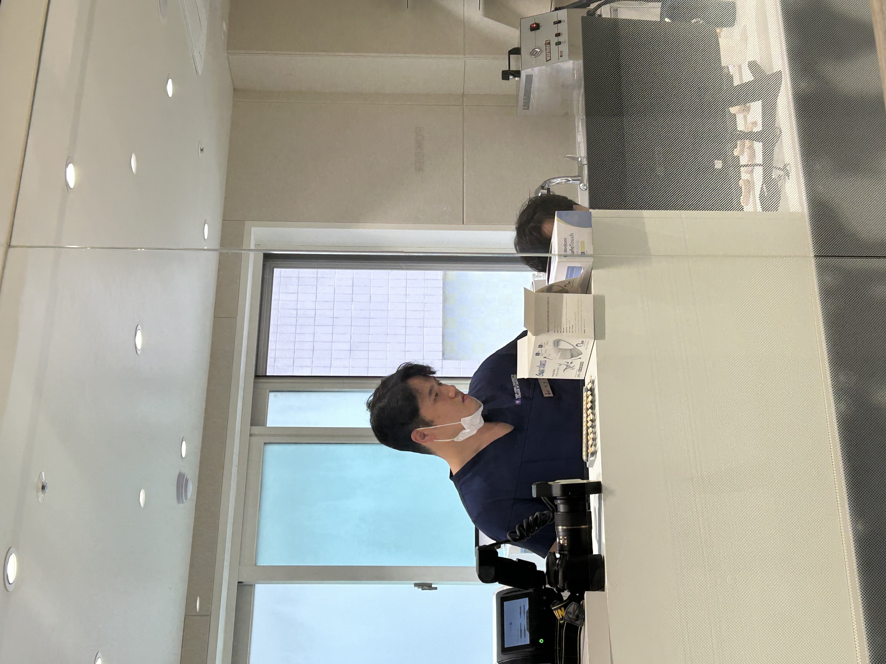

2018
Graduated from NYU
Graduated from New York University College of Dentistry and completed foundational training that shaped my U.S.-standard approach to patient care.
A journey between New York and Seoul—finding purpose in bridging two worlds.






I wasn't born and raised in the US, but I started studying there in high school. My dental career also began in New York. My first patients were American, and my first residency was at Brookdale Hospital in Brooklyn.
The patients I saw at both NYU and Brookdale had something in common: they were looking for affordable dentistry.
Because both Brookdale and NYU were largely insurance-based environments, I was able to see up close how difficult it can be for many patients to actually receive dental care. I saw how often people delayed treatment. I saw how long they had to wait, and how fragile continuity of care could be. Sometimes a case would even fall apart simply because the student or resident graduated before treatment was completed.
"I am not trying to build a cheap clinic. I want to build a clinic that delivers high-quality care at a price that makes sense, for both the patient and the practice."
Those experiences made me feel strongly that dental care needs to be more affordable.
At the same time, residency also taught me something equally important: dentistry is still a business, and making it affordable at any cost is not sustainable in the long run.
That is the idea behind lofi dental.
My goal is to use the advantages of Korea's lower cost structure to create a model where patients from the U.S. who struggle to find high-quality, reasonably priced care can come to Korea for treatment. Korea's overall cost of living is lower than that of the U.S., which makes it possible to meet the expectations of American patients while also keeping the practice profitable enough to allow for reinvestment and long-term growth.
Graduated from New York University College of Dentistry and completed foundational training that shaped my U.S.-standard approach to patient care.
Served in the military dental unit and gained practical experience in structured, high-responsibility clinical support settings.
Trained in an insurance-heavy U.S. clinical environment and saw firsthand how cost, access, and continuity gaps impact real patient outcomes.
Advanced GPR training with deeper exposure to complex treatment sequencing, interdisciplinary coordination, and continuity planning.
Delivered high-quality clinical care across multiple practice settings while refining a sustainable model balancing quality, affordability, and operational efficiency.
Founded lofi dental to deliver U.S.-standard care at a more accessible price point, with long-term sustainability and coordinated follow-up at the core.
Ready to start your journey?
Begin Consultation